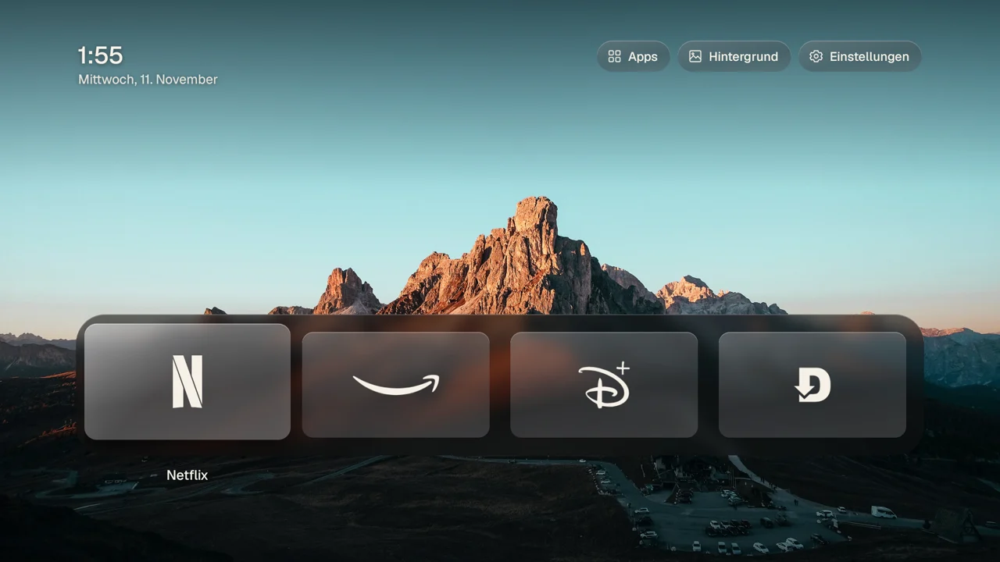
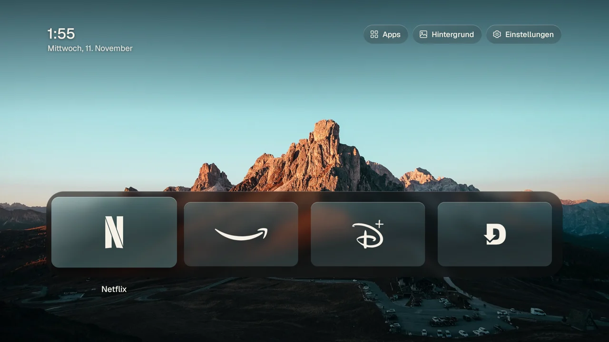
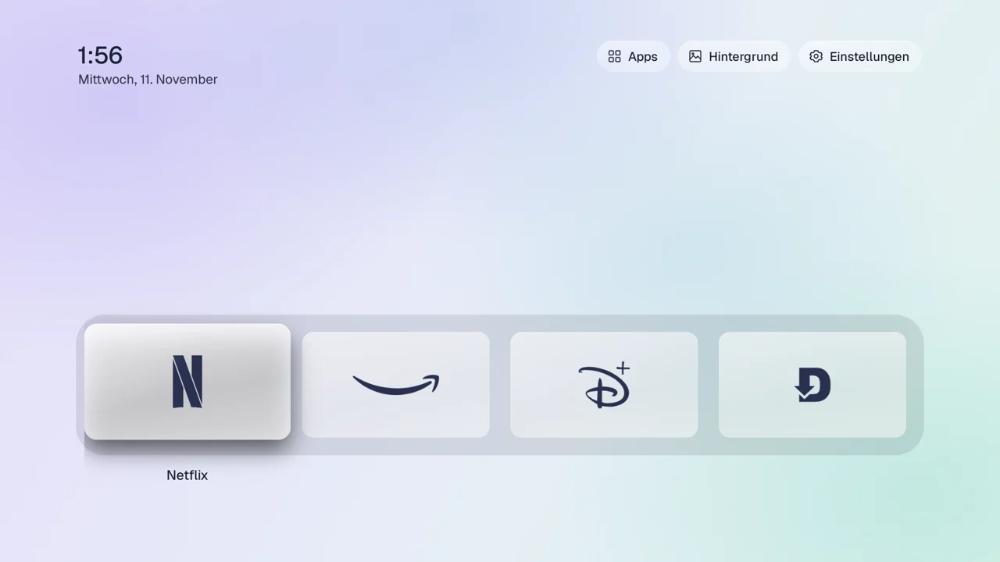
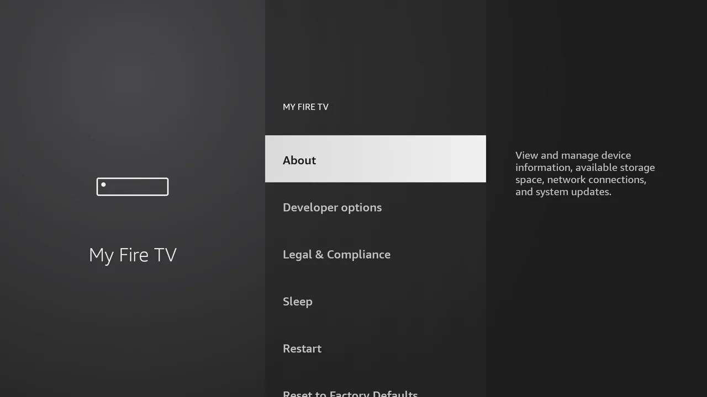
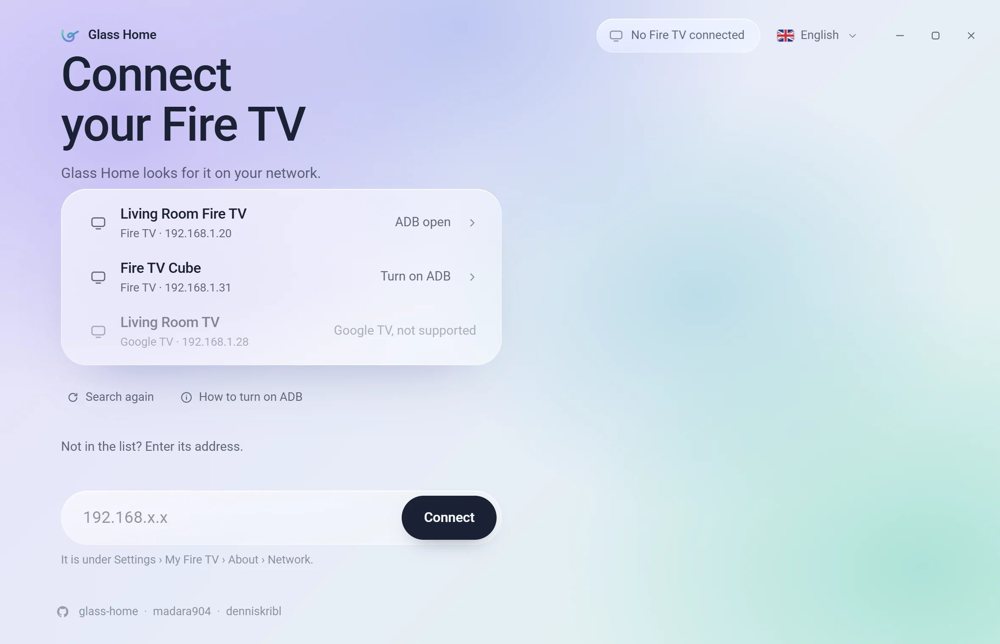
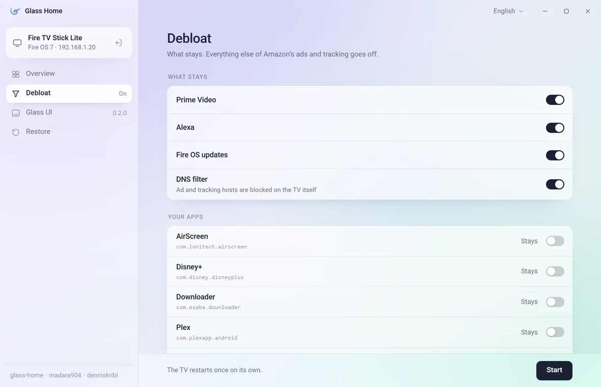

Remove ads from your Fire TV.
Glass Home turns off Amazon's ads and tracking on your Fire TV and gives it a clean glass home screen in your colours, with your own photos. You do it once, from your PC or Mac. No root, and everything can be undone.
Free and open source. Works with Fire TV Sticks, Cubes and Fire TV televisions on Fire OS 6, 7 and 8.

Your colours, your photos
Five colour schemes: Neutral, Mint, Sand, Lavender, and Auto, where the glass takes its colour from the wallpaper. Use one of the built-in photos, send your own from the computer, or let a slideshow change them every few minutes. Choose in the desktop tool or on the TV, under Settings › Background.


Step by step
About ten minutes, most of it waiting for the TV to restart. You need the Fire TV remote and a computer in the same Wi-Fi.
On the TV, once
Open "About"
On the Fire TV remote, press the Home button, go to the gear icon on the right and open these menus:
"Developer options", right below About, is where you go in step 3.

Become a developer
The first line on that screen is the name of your Fire TV. Highlight it and press the middle button of the remote seven times. The TV says "You are now a developer".
Turn on ADB debugging
Press Back once. A new entry has appeared. Open it and switch ADB debugging on. The TV asks once whether you are sure: choose OK.
On the computer
Open Glass Home
Download it for Windows or Mac and open it. There is nothing to install.
Windows may say "Windows protected your PC": choose More info, then Run anyway. Mac may refuse the first time: open System Settings › Privacy & Security and choose Open Anyway.
Pick your Fire TV
Glass Home looks for your Fire TV on the network by itself and lists it with its name. Click it. If it is not in the list, type its address: it is on the TV under Settings › My Fire TV › About › Network.

Allow it on the TV
The first time, the TV asks "Allow USB debugging?". Tick Always allow from this computer and choose OK. Glass Home then shows your Fire TV.
Debloat
Click Debloat. Choose what stays: Prime Video, Alexa and Fire OS updates are kept unless you switch them off. Your own apps stay too, unless you mark them for removal. Click Start.

Wait for the restart
The TV restarts once on its own. Don't turn it off. When every step has a tick, click Done.
Install the glass home screen
Click Glass UI, pick a layout and click Install. From now on the Home button on the remote opens Glass Home. Colours, wallpaper, layout and everything else you change on the TV, under Settings in Glass Home.
Turn off ADB debugging
When you are done, click Turn off ADB debugging under the actions. Nobody on your network can control the TV over ADB after that, and Glass Home keeps working. To restore or update later, switch it back on at the TV:
Changed your mind?
Connect again and click Restore. Amazon's home screen comes back, every package Glass Home turned off goes back on, the settings return to how they were, and the DNS filter and Glass Home are removed. Apps you chose to remove don't come back by themselves; get them from the Appstore again.
What it does
Debloat
Turns off Amazon's ad, tracking and telemetry packages and sets the privacy settings. Optionally a DNS filter that blocks Amazon's ad servers on the TV.
Glass UI
A quiet home screen made of glass: your apps, your colours, your photos, no ads and no rows of suggestions. The Home button opens it.
Restore
Puts everything back the way Amazon ships it. Nothing on the TV's system is changed, so nothing is lost.
Make it yours
Yet another vibe-coded app. Glass Home was built in conversation with an AI and tested on a real Fire TV Stick, one stubborn evening at a time. It is a starting point, not a finished product: read it, change it, fork it.
The launcher is plain Java without libraries, almost all of it in one file. The desktop tool is a small Tauri app, Rust for the TV work and TypeScript for the window. Ideas waiting for someone: an ad-free screensaver, a quick menu on a long press of Home, the remote's app buttons opening apps of your choice, a kids mode, Android TV support.
Questions
Which Fire TVs work?
Fire TV Sticks, Cubes and Fire TV televisions on Fire OS 6, 7 and 8. Fire TVs with Vega OS (sold since 2025) don't allow it. Google TV and Android TV devices show up greyed out: Glass Home is built for Fire OS.
The TV never asks "Allow USB debugging?"
The question appears on the TV screen. Make sure the TV is on and shows the Fire TV's picture, then connect again from Glass Home.
Glass Home doesn't find my Fire TV.
Check that ADB debugging is on and that the computer and the TV are in the same Wi-Fi (not a guest network). On Windows, allow Glass Home through the firewall when asked. You can always type the TV's address instead.
Is this safe?
Glass Home only switches packages off and changes settings, the way the TV's own menus could. Nothing on the system is deleted, and Restore undoes everything. It sends nothing anywhere: no accounts, no tracking. The code is open on GitHub.
Will Fire OS updates undo it?
Updates are kept by default so the TV stays secure. An update can turn a package back on; run Debloat again and it is off again.